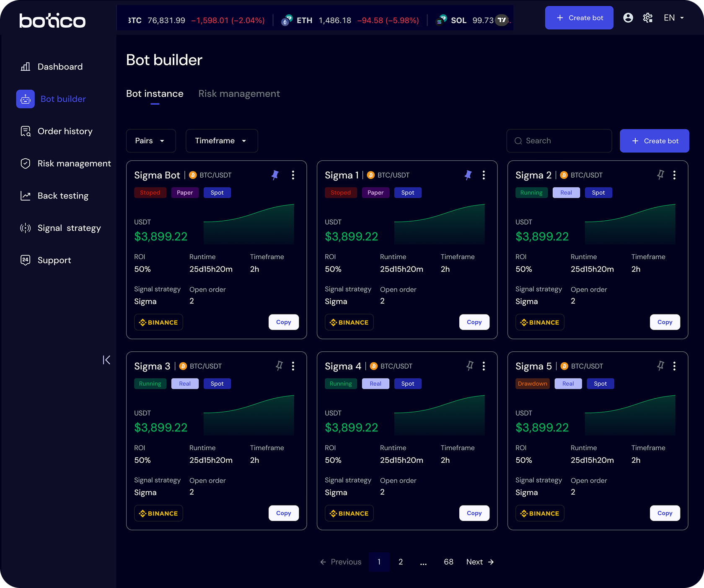
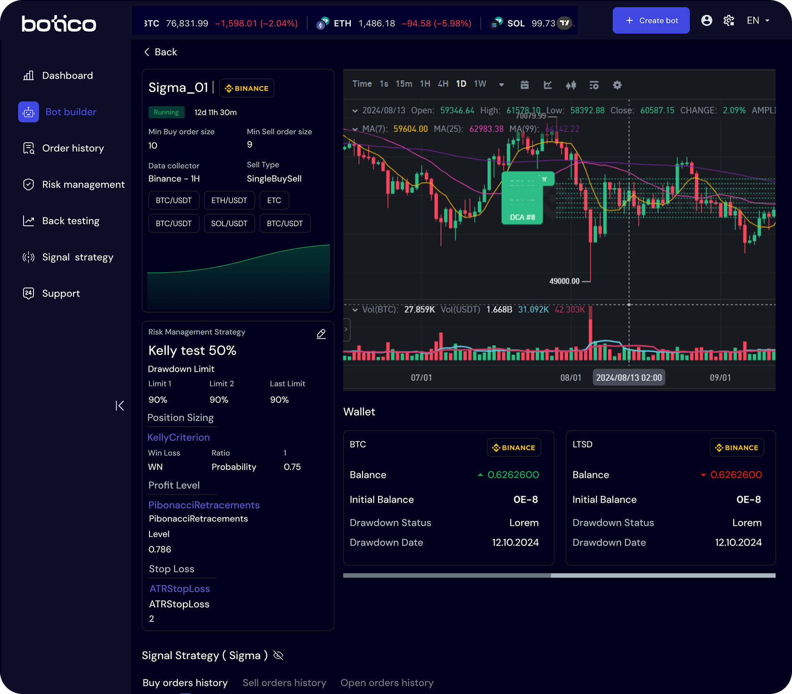
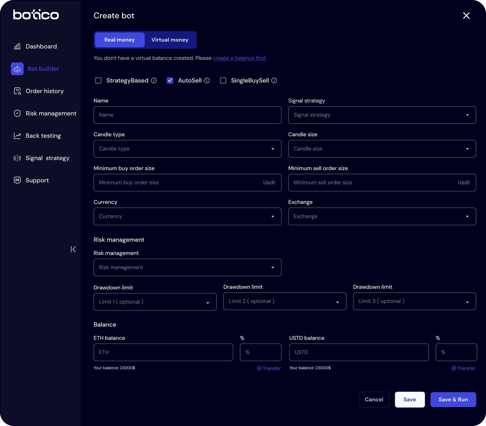
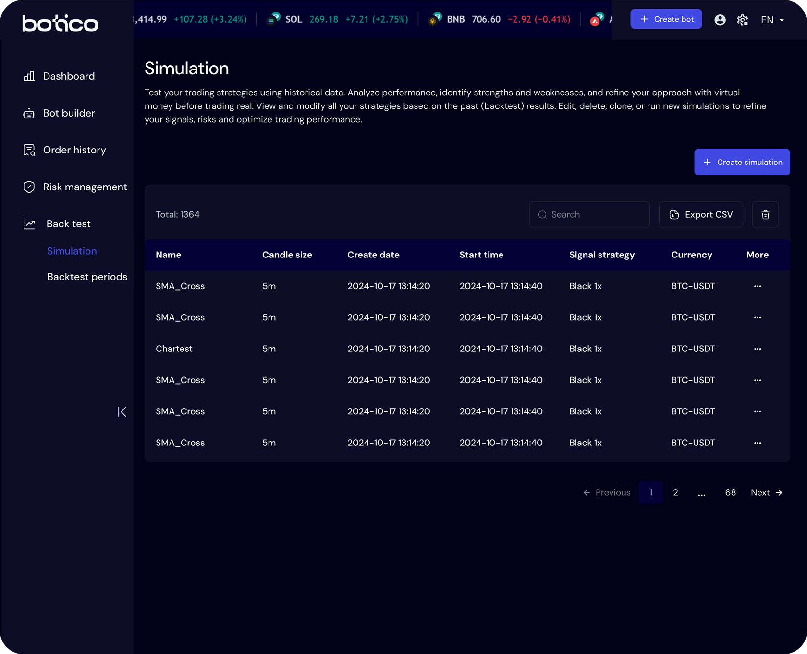
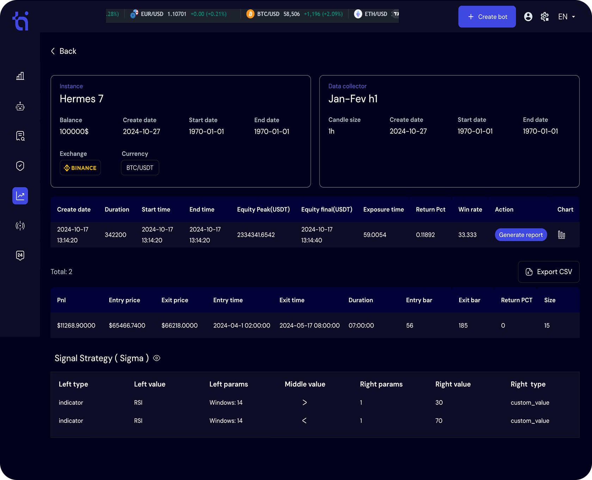
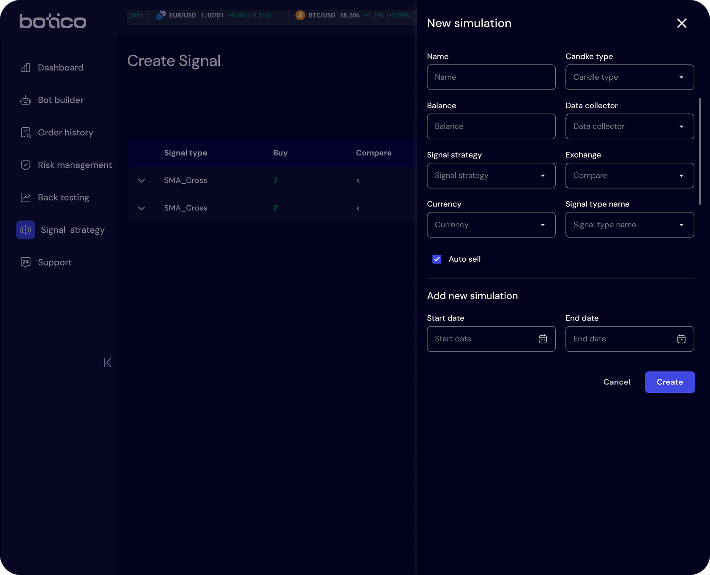
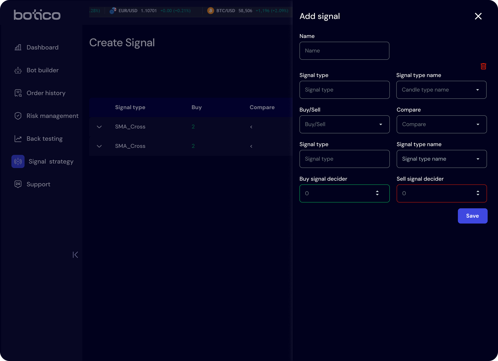
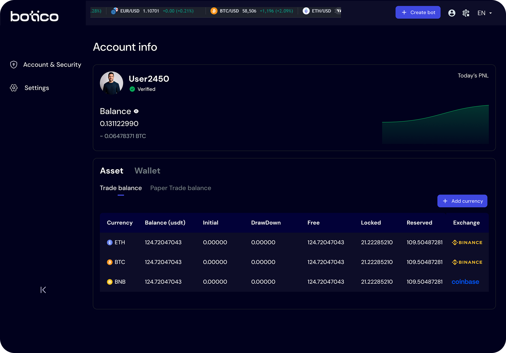
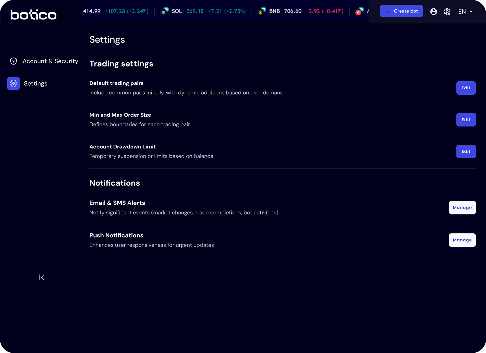
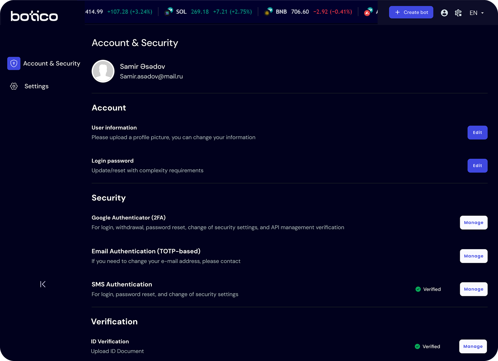

Empowering Traders with AI-Driven Automation
Botico is a newly founded company that offers a cutting-edge platform to help traders and investors achieve smarter, faster, and more consistent trading results through AI-driven automation, risk management tools, and real-time insights.
Project Overview
Botico is an intelligent trading platform designed to give traders full control over their strategies through custom signals, automated execution, and AI-powered optimization. It provides multi-asset support across crypto, stocks, and options, offering users advanced risk management, performance tracking, and seamless trading automation—all in one place.
Timeline
- Jan 2024 - Present
Teammates
- UX/UI designer (me)
- CEO
- QA Tester
- AI Engineer
- Software Engineer
My role
- User Research
- UI Design
- Prototyping
- User Testing
Link
My role and impact
As the Product Designer, I was responsible for designing the Botico application from the ground up. My contributions include:
- Conducting competitive analysis to understand market gaps and opportunities.
- Collaborating closely with the CEO and team to refine ideas and define product requirements.
- Creating UX flows, wireframes, and UI designs to establish an intuitive and efficient trading experience.
- Iterating on feedback to ensure a seamless user journey.
The opportunity
Why build the Botico App?
When we started working on Botico, we realized that traders were struggling with scattered tools. They had to jump between different platforms to create strategies, manage risks, and track their performance. The process was complicated, time-consuming, and not optimized for efficiency.
What was missing in the market?
During my discussions with the CEO and team, we explored what was lacking in existing platforms. A few key issues stood out:
- Lack of customization – Most platforms had rigid workflows that didn’t allow traders to tailor strategies to their needs.
- Too many disconnected tools – Users had to rely on multiple apps for different parts of their trading process.
- Overly complex interfaces – Many trading tools were overwhelming, making it difficult for both beginners and experienced traders to navigate.
- Limited AI-driven insights – There was a huge opportunity to use AI for smarter decision-making and optimization.
We saw a clear gap in the market: traders needed an all-in-one platform that was powerful yet easy to use, allowing them to automate their strategies, manage risks, and make data-driven decisions—all in one place. That’s exactly what we set out to build with Botico.
Competitive analysis & Research
Before diving into the design, I needed to understand what was already out there. I started by analyzing existing trading platforms to identify what they did well and where they fell short.
Key takeaways from Competitive Research
I explored several well-known trading platforms, looking at their strengths and weaknesses. Here’s what I found:
- Strong automation features – Some platforms had solid automation tools, but they were often complicated and required coding knowledge.
- Rigid strategy building – Many platforms forced traders to follow predefined workflows instead of letting them create flexible, customized strategies.
- Confusing user experience – Most interfaces were cluttered with too much data, making it overwhelming to navigate.
- Lack of AI-driven insights – While some platforms offered basic analytics, they didn’t leverage AI to help traders optimize their strategies.
Refining the vision
After gathering these insights, I discussed them with the team to define our approach. I focused on
- Making the platform powerful yet intuitive.
- Allowing users to build and automate strategies without coding.
- Integrating AI to enhance decision-making and risk management.
Information Architecture
The Information Architecture (IA) of Botico outlines the app’s structure, ensuring seamless navigation and an intuitive user experience.
Digital / Hi-fi Wireframe
Once the core structure and features were defined, I moved on to creating high-fidelity wireframes. This step helped shape the user experience, ensuring a smooth and intuitive flow that meets the needs of traders using the platform.
Design system
To maintain consistency and efficiency throughout the design process, I developed a design system that served as a foundation for the application’s visual language. This included typography, color palettes, spacing, button styles, form elements, and other reusable UI components. The system not only helped streamline the design process but also ensured a cohesive experience across different screens and features. While I’m not showcasing the full design system here, it played a crucial role in keeping the interface scalable, accessible, and visually consistent.
UI screens
With the foundation in place—from wireframes to a well-defined design system—I moved on to crafting the final interface. The goal was to design a clean, intuitive, and efficient experience that supports users at every step of their trading journey. Below are the final UI screens that bring together functionality and aesthetics in a cohesive, user-centered design.
Bot Builder – After setup, all bots are shown in one place. Each card highlights key details like ROI, status, and runtime. Filters and search help users find what they need quickly.
Bot Detail – A focused view where users can review each bot’s setup and performance at a glance. Everything is laid out clearly for easy tracking and edits.
Create Bot – This is where users set up their bot by choosing a strategy, exchange, balance allocation and s. The form is split into clear sections to make it easy to follow.
Simulation – Test your trading strategies using historical data. Analyze performance, identify strengths and weaknesses, and refine your approach with virtual money before trading real.
S.Detail – Review detailed metrics, visual analytics, and individual trade logs to understand how your bot performed. Use these insights to fine-tune your strategy and improve future outcomes.
Add Simulation – Customize key parameters like candle type, data collector, balance, and signal strategy to replicate real-market conditions and optimize performance before going live.
Signal strategy – Choose from preset signals, combine multiple signals, or design your own to align with your trading goals. Customize parameters to receive alerts that match your unique trading style and market conditions.

Add Signal – Define the conditions, indicators, and thresholds that trigger your signal. Fine-tune each parameter to build a powerful and precise alert system that supports smarter trading decisions.
Account – Check your current balance, track assets across your wallet, and easily add new currencies to stay on top of your trading portfolio.
Settings – Adjust default trading pairs, order size limits, and drawdown settings. Manage how you receive notifications through email, SMS, or push alerts — all from one place.
Account & Security – Manage your account details, enable multi-factor authentication and customize your security notifications to stay informed and in control.

Dashboard – As the entry point to the Botico app, the
dashboard is designed to offer users immediate clarity and confidence in their trading
activities. My goal was to surface key performance and market insights in a way that's
both visually digestible and action-oriented.
By organizing the content into modular cards, users can quickly grasp essential
information—like their balance trend, bot performance, and overall market
sentiment—without feeling overwhelmed. Strategic use of visual indicators, such as the
Fear & Greed index and performance graphs, supports faster decision-making while
maintaining a clean, intuitive layout.
This approach ensures the dashboard functions not just as a status report, but as a
smart, empowering launchpad for users navigating dynamic trading environments.
Takeaways
🔧 Designing from Scratch
With no existing product in place, I had full ownership of shaping the structure, user
flows, and visual identity. This gave me the freedom—and challenge—of building a product
experience from the ground up.
🤝 Cross-Functional Collaboration
Working closely with the CEO and development team helped me refine ideas quickly. Regular
feedback loops were essential to aligning business goals with user needs and technical
constraints.
🧠 Simplifying Complexity
A key focus was turning advanced trading features into something intuitive. I learned how to
translate technical tools like algorithmic strategies and backtesting into a clear,
approachable UI.
🚀 Growing as a Designer
This project boosted my confidence in owning end-to-end design. From UX thinking to UI
execution, I became more comfortable making product decisions and advocating for user-first
solutions.
Impact
Since the launch of the beta version of Botico, the application has already started to make a significant impact on users and the trading process. Although still in development, the platform is continuously evolving, with ongoing improvements guided by user feedback and internal collaboration. The team, including myself, is actively working to enhance the platform's performance, usability, and overall user experience. Even at this early stage, Botico has received positive responses from its initial users, helping traders streamline their workflows and automate trading strategies. The intuitive design, combined with AI-powered optimization tools, has already begun to improve trading efficiency and reduce risks for users. As the platform progresses beyond the beta phase, the impact will continue to grow, as we continue refining features and adding new functionalities that will make Botico an even more powerful tool for algorithmic traders..